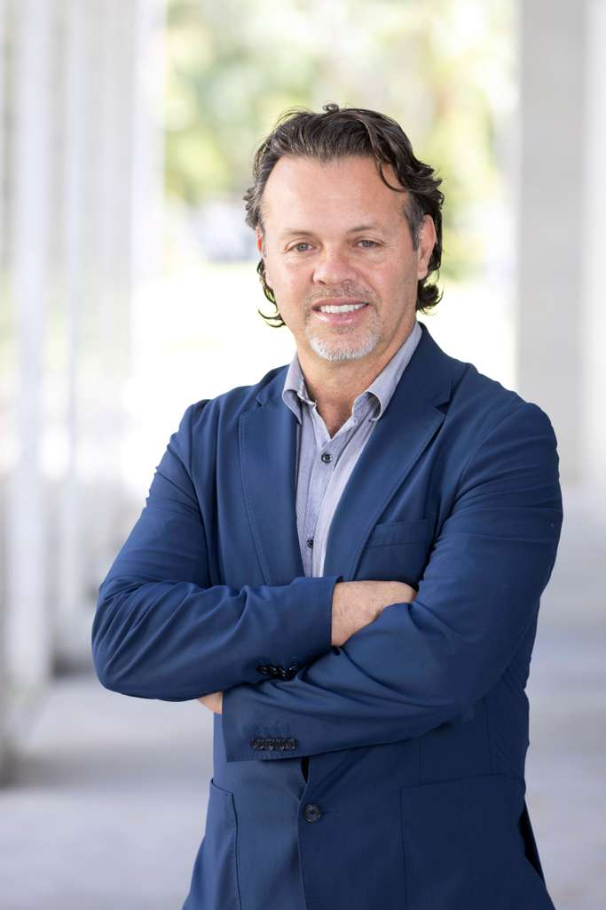
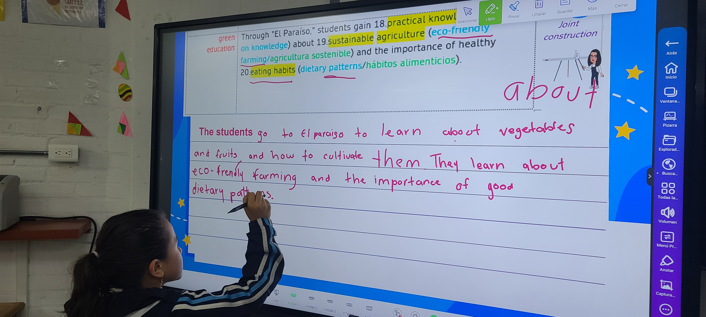
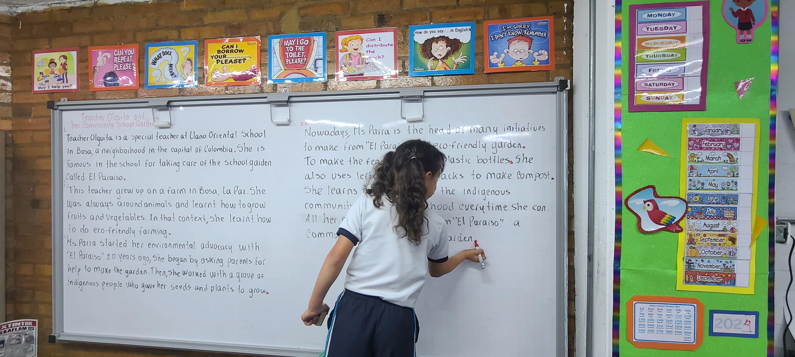
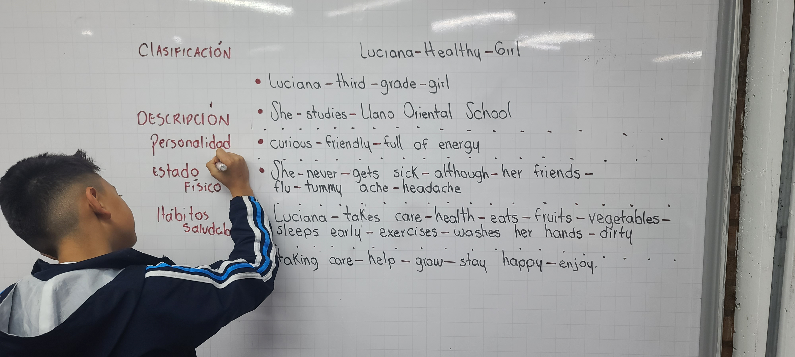

Solo necesitan que les enseñemos desde lo que ya saben. Una metodología nacida en los salones de clase de Bogotá que usa el español como puente — y convierte a cada estudiante en autor real de textos en inglés.
"Cuando empecé a usar mi español para entender el inglés, todo tuvo sentido. Ahora escribo mis propios textos."
Estudiante · Colegio Llano Oriental · Bosa, Bogotá
Nada explica mejor esta metodología que escuchar a los propios estudiantes. Niños y jóvenes del Colegio Llano Oriental en Bosa cuentan cómo aprendieron inglés — desde su barrio, su idioma y su historia.
Yuly Andrea González lleva años enseñando inglés en el Colegio Llano Oriental, en Bosa Carbonel — uno de los sectores populares del sur de Bogotá. Es doctora en Educación y Sociedad, pero su laboratorio no es una universidad: es el salón de clase real, con los niños y jóvenes de su comunidad.
Lo que hace Yuly es simple y poderoso: usa el español que los estudiantes ya dominan como puente hacia el inglés. No para traducir — sino para pensar, organizar y finalmente escribir textos propios en inglés con coherencia, propósito y voz.
Más de 450 estudiantes y 2.000 textos escritos después, los resultados hablan solos: niños de colegio público produciendo textos académicos en inglés sobre su propio barrio, su huerta escolar, su mercado local.

Profesor Asociado · Florida Atlantic University (EE. UU.)
Creador del marco Genre Translanguaging
Andrés desarrolló el marco teórico y metodológico que fundamenta el CBS. Su investigación conecta la pedagogía de géneros textuales con el translenguaje — y el trabajo con Yuly en Bogotá es la implementación más extensa de este enfoque en aula real en Latinoamérica.
El CBS no es magia — es una secuencia clara y replicable. El texto está en inglés desde el principio, pero cada fase usa el español de forma estratégica para que los estudiantes lleguen al inglés con todo lo que necesitan para escribir bien. Sin memorizar listas de palabras. Sin traducir mecánicamente. Con sentido real.
Toda la preparación ocurre en español. El docente activa conocimientos previos, contextualiza el tema y previsualiza en detalle la estructura del texto. El estudiante llega al inglés sin variables desconocidas.
El texto en inglés se lee con apoyo del español. Se identifican palabras clave, etapas del género y recursos léxico-gramaticales. La lengua materna ancla el significado.
El docente modela en español cómo se va a construir el texto en inglés. Los estudiantes comprenden la tarea antes de ejecutarla en L2.
El texto de entrada está directamente en inglés. No hay texto espejo en español — la L1 opera como andamiaje cognitivo, no como traducción.
La escritura se realiza en inglés. Los estudiantes toman turnos en el tablero, discuten sinónimos y reconstruyen el texto colectivamente en L2.
Producción autónoma en inglés. Cada estudiante elige su tema dentro del género trabajado. Los textos del Humedal Tibanica, Javifruver y Merkabastos son prueba de lo que produce este ciclo.
Géneros que trabajan los estudiantes
Reportes descriptivos · Narrativas · Explicaciones · Argumentaciones — siempre sobre temas del barrio, la escuela y la comunidad de cada estudiante.
Lo que lo hace diferente
No es translenguaje libre. Cada cambio de lengua tiene un momento y un propósito dentro del ciclo — eso es lo que genera resultados concretos y replicables en cualquier aula.
¿Quieres implementarlo en tu aula?
Este video muestra cómo se ve el CBS en la práctica — desde la preparación hasta que los estudiantes escriben sus textos de forma independiente en inglés.
Hablemos →Basado en el material real usado en 4° grado del Colegio Llano Oriental: "Doña Tina: The Guardian of the Tibanica Wetland" — un recuento biográfico sobre la guardiana del Humedal de Tibanica, en Bosa, Bogotá.

🇨🇴 En españolAntes de leer una sola palabra en inglés, los estudiantes activan conocimientos previos en español. Se les explica qué es un recuento biográfico, cuáles son sus etapas (Orientación + Eventos de Vida), y se conectan con el tema a través de su propia experiencia: ¿quién en tu salón ya es un líder ambiental?
Toda la preparación ocurre en la lengua materna — el estudiante llega al texto en inglés sin variables desconocidas.

🇨🇴 + 🇬🇧 BilingüeEn el tablero, docente y estudiantes reconstruyen el texto juntos — identificando palabras clave, etapas del género y vocabulario específico. El español funciona como puente: cada estructura nueva en inglés se ancla a un significado que el estudiante ya domina.
Esta es la fase donde ocurre la "negociación colectiva de significados" — los estudiantes se enseñan entre sí.
| Etapa | Doña Tina: The Guardian… |
|---|---|
| ORIENTATION | Mrs. Tina is an environmental leader from the locality of Bosa, known as the guardian of the wetlands… ··· |

🇬🇧 En inglésCada estudiante demuestra su comprensión de forma autónoma: clasifica vocabulario, completa líneas de tiempo y organiza la información del texto en sus propias palabras — en inglés.
El resultado: producciones escritas que muestran transferencia real del español al inglés, no memorización.
Esto es un fragmento de una secuencia de 3 actividades para una sola unidad temática. Cada género trabajado en el CBS tiene su propia secuencia completa.
¿Quieres aplicarlo en tu aula? →Uno de los aportes más originales del trabajo de Yuly es la identificación de 23 patrones discursivos recurrentes en las producciones escritas de los estudiantes. Estos patrones emergen de la implementación sistemática del CBS y constituyen un mapa de cómo los estudiantes colombianos construyen significado en inglés cuando tienen el andamiaje adecuado en su lengua materna.
Familia 1 · Historias
Familia 2 · Crónicas
Familia 3 · Explicaciones
Familia 4 · Reportes
Familia 5 · Procedimientos
Familia 6 · Argumentos
No son errores ni interlengua — son evidencia de cómo los estudiantes multilingües construyen conocimiento académico en inglés cuando se parte de sus fortalezas en español. Constituyen un mapa pedagógico replicable para docentes de toda Colombia.
En el Colegio Llano Oriental, en Bosa Carbonel, los estudiantes de Yuly escriben sobre lo que conocen: el Humedal de Tibanica, la Huerta El Paraíso, Javifruver, Merkabastos. Temas cercanos, textos reales, en inglés.
Sin app de idiomas. Sin inmersión en el extranjero. Sin recursos importados. Solo un método bien pensado, una maestra comprometida y estudiantes que descubren que su historia y su barrio son el mejor punto de partida para aprender una lengua nueva.
Los más de 2.000 textos recopilados muestran algo claro: cuando el español se usa como palanca y no como obstáculo, los niños llegan al inglés con confianza, con identidad y con cosas reales que decir.
Los estudiantes no solo "escriben en inglés" — producen textos que siguen una estructura clara y tienen algo genuino que comunicar.
Las palabras en inglés aparecen porque el estudiante las necesita para su texto — no porque estaban en una lista del lunes.
Los textos hablan de lo que los estudiantes conocen y valoran — eso genera motivación real y textos auténticos.
En la construcción conjunta los estudiantes se enseñan entre sí. El cambio de lengua deja de ser un problema y se convierte en una herramienta colectiva.
El trabajo de Yuly y Andrés está documentado en revistas indexadas, capítulos de libros internacionales y presentaciones en congresos. Consulta las publicaciones completas en los repositorios académicos de Andrés Ramírez.
Si eres docente, directivo, investigador o institución interesada en implementar el CBS en tu contexto, en co-investigar sobre translenguaje pedagógico o en formarte con Yuly, escríbenos.